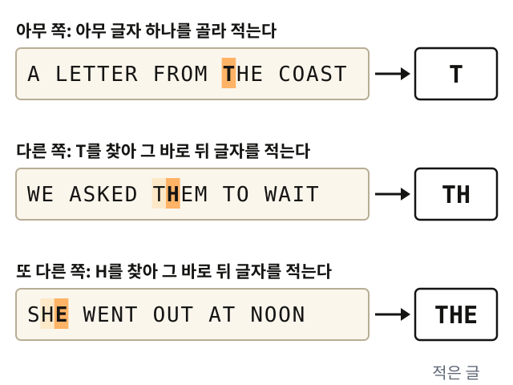

정보 이론: 다음 글자는 얼마나 맞힐 수 있나
휴대폰 자판은 몇 글자만 쳐도 다음 낱말을 미리 띄워 준다. 앞 글자를 알면 다음 글자가 상당 부분 짐작된다는 뜻이다. 그렇다면 앞 글자를 알 때 다음 글자를 얼마나 맞힐 수 있을까? 그 정도를 숫자로 잴 수 있을까? 이 물음을 처음 셈으로 다룬 것은 물리가 아니라 통신 공학이었다.
역사: 섀넌의 통신 이론
1948년 벨 연구소의 섀넌은 "메시지를 보내려면 평균 몇 비트가 필요한가"를 물었고, 불확실성의 잣대가 갖춰야 할 조건 몇 개를 세웠다. 그러자 그 조건을 만족하는 함수는 H = −Σ p log₂ p뿐이었는데, 이것은 물리의 엔트로피와 밑만 다른 같은 식이다. 정보 이론에서는 엔트로피를 S 대신 H로 적는데, 글자만 다를 뿐 k = 1로 둔 같은 양이다.

이 양에 "엔트로피"라는 이름을 붙이라고 폰 노이만이 권했다는 일화도 있다. "같은 식이 통계역학에 이미 있고, 엔트로피가 무엇인지 아무도 모르니 논쟁에서 항상 이길 것"이라는 내용인데, 훗날 전해진 이야기라 사실 여부는 확실하지 않다.
역사: 책 한 권을 확률표로 쓰기
그런데 같은 1948년 논문에서 섀넌은 식보다 먼저 영어 글을 흉내 내는 실험을 보여 준다. 글자를 뽑는 규칙을 한 단계씩 영어에 가깝게 바꾸어 가며 가짜 문장을 지어 본 것이다. 기호는 알파벳 26개와 공백을 더한 27가지다.
첫 단계에서는 27가지를 모두 같은 확률로 뽑았다. 둘째 단계에서는 E는 12%, W는 2%처럼 영어 글에 글자가 나오는 비율대로 뽑았는데, 여기까지는 이미 책으로 나와 있던 글자 빈도표와 난수표로 충분했다. 셋째 단계부터는 표가 커진다. 바로 앞 글자에 따라 다음 글자의 확률이 달라지게 하려면 "T 다음에 H가 올 확률"처럼 글자 짝마다 확률을 적은 표가 있어야 하고, 앞 두 글자를 보려면 표의 칸이 27 × 27 × 27 = 19,683개로 늘어난다.
그런 표도 책으로 나와 있었지만, 섀넌은 표를 뒤지는 대신 더 간단한 방법을 골랐다. 책 한 권을 표 대신 쓴 것이다. 책을 아무 데나 펴서 아무 글자나 하나 고르고 적는다. 다른 쪽을 펴서 그 글자가 나올 때까지 읽다가, 나오면 바로 뒤의 글자를 적는다. 또 다른 쪽을 펴서 이번에는 방금 적은 글자를 찾고, 그 뒤의 글자를 적는다. 이렇게 하면 "T 다음에는 H가 자주 온다"는 사실을 숫자로 옮겨 적지 않아도, 그 책에서 T 뒤에 H가 실제로 오는 비율대로 H가 뽑힌다. 찾는 대상을 글자 두 개, 단어 하나로 늘리면 같은 방법으로 더 긴 앞 문맥을 흉내 낼 수 있다.

논문에 실린 결과는 다음과 같다.
| 다음 글자를 뽑는 규칙 | 섀넌이 얻은 문장 (앞부분) |
|---|---|
| 27가지를 같은 확률로 | XFOML RXKHRJFFJUJ ZLPWCFWKCYJ … |
| 글자 비율만 영어처럼 | OCRO HLI RGWR NMIELWIS EU LL NBNESEBYA … |
| 앞 두 글자를 보고 | IN NO IST LAT WHEY CRATICT FROURE BIRS GROCID … |
| 앞 단어 하나를 보고 다음 단어를 | THE HEAD AND IN FRONTAL ATTACK ON AN ENGLISH WRITER THAT THE CHARACTER OF THIS POINT IS … |
앞을 많이 볼수록 문장은 영어를 닮아 간다. 거꾸로 말하면, 영어에서 다음 글자는 앞 글자들을 알면 상당 부분 이미 정해져 있다는 뜻이다. 섀넌은 여덟 글자쯤까지의 앞 문맥만 따져도 영어 글의 절반쯤은 언어의 짜임새가 정하고, 쓰는 사람이 자유롭게 고르는 것은 나머지 절반뿐이라고 어림했다.
역사: 아내에게 다음 글자 맞히게 하기
표든 책이든, 앞 문맥을 몇 글자 이상으로 늘리기는 어렵다. 그래서 1951년 논문 「인쇄된 영어의 예측과 엔트로피」에서 섀넌은 사람의 머릿속을 확률표로 썼다. 상대가 처음 보는 글 한 대목을 골라 첫 글자를 맞혀 보게 한다. 맞히면 맞았다고 알려 주고 다음 글자로 넘어가고, 틀리면 틀렸다고만 말해 다시 맞히게 한다. 그리고 글자마다 몇 번째 추측에서 맞혔는지를 적는다.
이 놀이의 상대는 벨 연구소에서 수치 계산을 하던 그의 아내 베티 섀넌이었다고 전해진다. 섀넌이 서가에서 레이먼드 챈들러의 탐정 소설을 꺼내 아무 대목이나 짚고, 베티에게 한 글자씩 맞혀 보게 했다는 것이다. 논문에 실린 한 대목은 "THE ROOM WAS NOT VERY LIGHT A SMALL OBLONG READING LAMP ON THE DESK …"로 시작한다.
결과는 예상보다 한쪽으로 쏠려 있었다. 논문의 다른 예에서는 기호 102개 가운데 79개를 첫 추측에 맞혔고, 다섯 번 넘게 걸린 것은 여덟 개뿐이었다. 틀리는 곳은 주로 새 단어의 첫머리였고, 단어가 시작되고 나면 나머지 글자는 거의 한 번에 맞혔다. 이런 실험을 여러 글로 되풀이한 끝에 섀넌은, 앞 문맥을 충분히 아는 사람에게 영어 글자 하나가 새로 알려 주는 양이 평균 0.6~1.3비트쯤이라고 어림했다. 알파벳 26개를 같은 확률로 보면 글자 하나가 log₂ 26 ≈ 4.70비트, 글자 비율만 따지면 4.14비트였으니, 앞을 아는 만큼 글자 하나가 알려 주는 것이 줄어든 것이다.
문제 10. 한국어와 중국어로 섀넌의 놀이를 하면
섀넌은 영어 글자 하나가 새로 알려 주는 양을, 글자 비율만 따지면 약 4.14비트, 앞 문맥을 충분히 알면 0.6~1.3비트로 어림했다. 같은 놀이를 중국어(한자)나 한국어(한글)로 하면 글자 하나가 알려 주는 양은 영어보다 클까, 작을까? 그 양이 크면 같은 말을 더 적은 비트로 전하는 언어일까?

영어는 글자가 26개뿐이니까 베티가 잘 맞힌 것 같아요. 한자는 수천 자라서 훨씬 많이 틀렸을 텐데요.

후보 수로 먼저 어림해 봐요. 모든 글자를 같은 확률로 쓴다면 글자 하나가 몇 비트죠?

영어는 log₂ 26 ≈ 4.70이에요. 중국에서 자주 쓰는 글자로 정해 둔 상용자표가 3,500자니까 log₂ 3500 ≈ 11.77이고요. 한글은 초성 19개, 중성 21개, 받침 자리 28가지(받침 없음 포함)를 조합하니까 19 × 21 × 28 = 11,172자, log₂ 11172 ≈ 13.45예요. 한글이 가장 크네요.

그건 모든 글자가 똑같이 나올 때의 상한이에요. 섀넌도 글자 비율을 넣자 4.70이 4.14로 줄었죠. 한자는 중국 언어학자 펑즈웨이(馮志偉)가 1970년대에 글자 비율로 세어 한 자에 약 9.65비트라고 어림했어요. 한글은 이 책 원고에서 한글만 골라 세어 봤어요. 26만 2천 음절 가운데 서로 다른 음절은 997개뿐이었고, 음절 하나의 엔트로피는 7.77비트였어요.
11,172개 가운데 997개요? 1할도 안 되네요.

만들 수 있는 글자가 많을 뿐이지 실제로 쓰는 음절은 적은 거네요. 「뷁」 같은 글자는 거의 안 나오니까요.
그뿐 아니라 쓰는 음절도 크게 쏠려 있어요. 이 원고에서는 「이·는·다·에·로」 같은 음절 100개가 전체의 70%를 차지해요. 한 가지 더 세어 봤어요. 초성, 중성, 받침 자리를 따로따로 세면 엔트로피가 3.54 + 3.46 + 2.26 = 9.27비트인데, 음절로 한꺼번에 세면 7.77비트예요.

따로 센 게 1.5비트 더 크네요. 같은 음절을 세는데 왜 달라요?

섀넌이 책을 펴서 한 거랑 같은 거 아니에요? 앞 글자를 알면 다음 글자가 어느 정도 정해졌잖아요. 한 음절 안에서도 초성과 중성을 알면 올 수 있는 받침이 좁혀지니까, 따로 세면 서로 정해 주는 몫까지 두 번 세는 거예요.
맞아요. 그 1.5비트가 음절 안에서 자모끼리 서로 알려 주는 몫이에요.

그럼 결론은 간단하네요. 한자 한 자가 9.65비트고 영어 한 글자가 4.14비트니까, 중국어가 두 배 넘게 정보가 빽빽한 언어예요.

「어린 왕자」 한 쪽을 영어판과 중국어판으로 나란히 놓으면 어느 쪽 글자 수가 많을까요?

아, 중국어판은 글자 수가 훨씬 적겠죠. 글자 하나가 무거운 대신 글자를 적게 쓰는 거네요. 글자당 비트는 글자를 얼마나 잘게 쪼개느냐에 따라 달라지니까, 그걸로 언어끼리 비교하면 안 되겠어요.

그러면 같은 뜻의 번역본을 놓고 전체에 몇 비트가 드는지 재야 하겠네요. 실제로 그렇게 비교한 연구가 있어요?
있어요. 2019년 쿠페, 오윤미, 데디우, 펠레그리노는 17개 언어 사용자 170명에게 같은 짧은 글 15편의 번역본을 소리 내어 읽게 했어요. 한국어, 중국어(보통화), 영어도 들어 있었죠. 앞 음절을 안다고 칠 때 음절 하나가 알려 주는 양은 바스크어의 4.8비트에서 베트남어의 8.0비트까지 언어마다 달랐어요. 그런데 음절 하나가 무거운 중국어나 베트남어는 천천히 말하고, 가벼운 스페인어는 빨리 말했어요. 그래서 1초에 전하는 양은 모두 평균 39비트 근처로 모였어요.

음절이 싸면 많이 말하고 비싸면 적게 말해서, 1초에 보내는 양은 비슷하게 맞춘다는 거네요.

언어 모델에도 똑같은 문제가 있겠어요. 토큰을 어떻게 쪼개느냐에 따라 토큰당 loss가 달라질 테니, 한국어 모델과 영어 모델의 토큰당 loss를 그대로 비교하면 안 되겠네요.
그래서 언어끼리 비교할 때는 같은 문장 전체에 드는 비트나, 바이트 하나에 드는 비트로 맞춰 재요. 쪼개는 방식 차이도 생각보다 커요. 2023년 페트로프 등은 같은 문장을 200개 언어로 옮긴 번역 모음(FLORES-200)을 여러 모델의 토크나이저로 쪼개 보았는데, 같은 뜻인데도 언어에 따라 토큰 수가 최대 15배까지 차이 났어요. 토큰 수로 요금을 매기는 서비스라면, 같은 내용을 쓰는데도 어떤 언어 사용자는 몇 배를 더 내는 셈이에요.

글자 하나가 무거운지 가벼운지는 쪼개는 방식의 문제고, 진짜로 비교할 건 같은 뜻을 받아 적는 데 드는 비트군요.